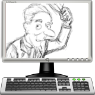

<div class="header"><h1 class="title">Draw with Pencil</h1></div>

<div class="main">

<div class="content"><ul>
	<li>Edubuntu ships with <em>Pencil</em>, a multi-purpose drawing tool.</li>
	<li>Create traditional hand-drawn animations or cartoons.</li>
	<li>Mix up bitmap and vector graphics.</li>
	<li>Start a comic-strip or draw a self-portrait!</li>
</ul></div>

</div>


